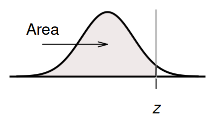

B.1 When the \(z\)-score is known, and the area is sought

The table gives the probability (area) that a \(z\)-score is less than the \(z\)-score looked up. For example: Look up \(z = -1.87\); the area less than \(z = -1.87\) is about 0.0307, or about 3.1%.
To use this table,
enter the \(z\)-score in the search box under the z.score column.
The area will be shown.
The table includes \(z\)-values between -4 and 4.
(Alternatively, you can search through the table manually.)
The online Tables work with two decimal places.
As an example, then, consider finding the area to the left of \(z=-2.00\).
In the tables,
the value -2 is entered in the search region, just under the column labelled z.score
(see the animation below).
After pressing Enter,
the answer is shown in the column headed Area.to.left:
the probability of finding a \(z\)-score less than \(-2\) is 0.0228, or about 2.28%.
The hard-copy tables work differently. On the tables, look for \(-2.0\) in the left margin of the table, and for the second decimal place (in this case, 0) in the top margin of the table (see the animation below): where these intersect is the area (or probability) less than this \(z\)-score. So the probability of finding a \(z\)-score less than \(-2\) is 0.0228, or about 2.28%.